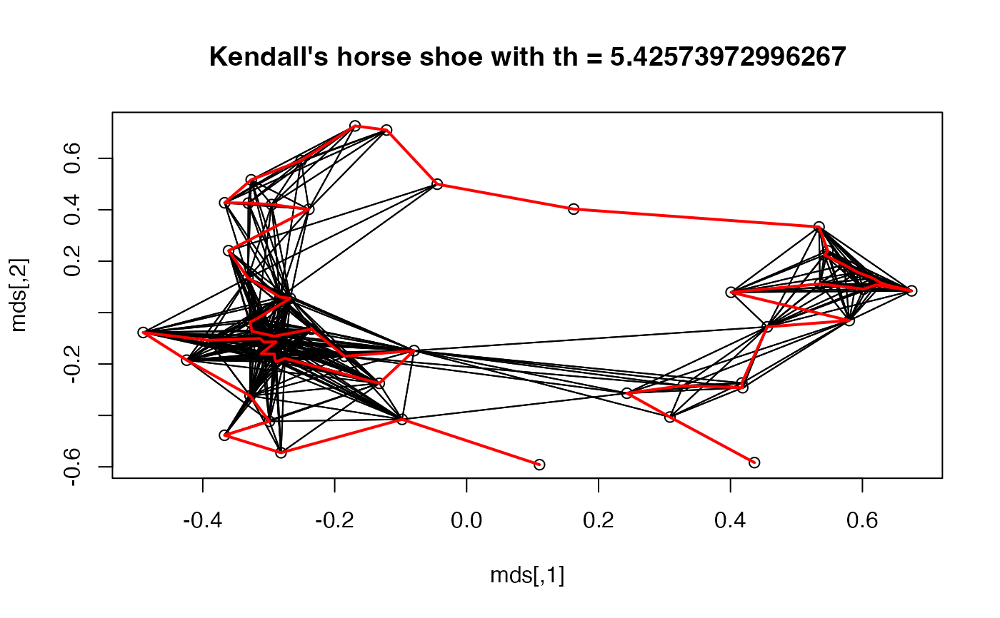

This data set contains a grave times artifact incidence matrix for the Celtic Münsingen-Rain cemetery in Switzerland as provided by Hodson (1968) and published by Kendall 1971.
Format
A 59 x 70 0-1 matrix. Rows (graves) and columns (artifacts) are in the order determined by Hodson (1968).
References
Hodson, F.R. (1968): The La Tene Cemetery at Münsingen-Rain. Stämpfli, Bern.
Kendall, D.G. (1971): Seriation from abundance matrices. In: Hodson, F.R., Kendall, D.G. and Tautu, P., (Editors). Mathematics in the Archaeological and Historical Sciences, Edinburgh University Press, Edinburgh, 215--232.
Examples
data("Munsingen")
## Seriation method after Kendall (1971)
## Kendall's square symmetric matrix S and SoS
S <- function(x, w = 1) {
sij <- function(i , j) w * sum(pmin(x[i,], x[j,]))
h <- nrow(x)
r <- matrix(ncol = h, nrow =h)
for(i in 1:h) for (j in 1:h) r[i,j] <- sij(i,j)
r
}
SoS <- function(x) S(S(x))
## Kendall's horse shoe (Hamiltonian arc)
horse_shoe_plot <- function(mds, sigma, threshold = mean(sigma), ...) {
plot(mds, main = paste("Kendall's horse shoe with th =", threshold), ...)
l <- which(sigma > threshold, arr.ind=TRUE)
for(i in 1:nrow(l)) lines(rbind(mds[l[i,1],], mds[l[i,2],]))
}
## shuffle data
x <- Munsingen[sample(nrow(Munsingen)),]
## calculate matrix and do isoMDS (from package MASS)
sigma <- SoS(x)
library("MASS")
mds <- isoMDS(1/(1+sigma))$points
#> initial value 21.388870
#> iter 5 value 15.513984
#> final value 15.439207
#> converged
## plot Kendall's horse shoe
horse_shoe_plot(mds, sigma)
## find order using a TSP
library("TSP")
tour <- solve_TSP(insert_dummy(TSP(dist(mds)), label = "cut"),
method = "2-opt", control = list(rep = 15))
#> Warning: executing %dopar% sequentially: no parallel backend registered
tour <- cut_tour(tour, "cut")
lines(mds[tour,], col = "red", lwd = 2)

## create and plot order
order <- ser_permutation(tour, 1:ncol(x))
bertinplot(x, order, options= list(panel=panel.circles,
rev = TRUE))
#> Warning: Unknown parameters: options
#> Available parameter (with default values):
#> panel.function = function (value, spacing, hl) { grid.rect(x = seq(length(value)), y = spacing/2, width = 1 - spacing, height = value * (1 - spacing), just = c("centre", "bottom"), default.units = "native", gp = gpar(fill = hl)) }
#> flip_axes = TRUE
#> frame = FALSE
#> spacing = 0.2
#> margins = c(5, 4, 8, 8)
#> gp_labels = list()
#> gp_panels = list()
#> shading = NULL
#> shading_col = c("#E2E2E2", "#E0E1E2", "#DFDFE1", "#DDDDE0", "#DBDBDF", "#D9DADF", "#D7D8DE", "#D5D6DD", "#D3D4DC", "#D1D3DB", "#CFD1DB", "#CDCFDA", "#CCCDD9", "#CACCD8", "#C8CAD8", "#C6C8D7", "#C4C7D6", "#C2C5D5", "#C0C3D5", "#BEC1D4", "#BDC0D3", "#BBBED2", "#B9BCD2", "#B7BBD1", "#B5B9D0", "#B3B7CF", "#B1B5CE", "#AFB4CE", "#AEB2CD", "#ACB0CC", "#AAAFCB", "#A8ADCB", "#A6ABCA", "#A4AAC9", "#A2A8C8", "#A1A6C8", "#9FA5C7", "#9DA3C6", "#9BA1C5", "#99A0C4", "#979EC4", "#959CC3", "#949BC2", "#9299C1", "#9097C1", "#8E96C0", "#8C94BF", "#8A92BE", "#8891BE", "#878FBD", "#858DBC", "#838CBB", "#818ABB", "#7F89BA", "#7D87B9", "#7B85B8", "#7984B8", "#7882B7", "#7680B6", "#747FB6", "#727DB5", "#707CB4", "#6E7AB3", "#6C78B3", "#6A77B2", "#6875B1", "#6674B1", "#6472B0", "#6370AF", "#616FAF", "#5F6DAE", "#5D6CAD", "#5B6AAD", "#5968AC", "#5767AC", "#5565AB", "#5264AA", "#5062AA", "#4E61A9", "#4C5FA9", "#4A5DA8", "#485CA8", "#455AA7", "#4359A7", "#4157A6", "#3E55A6", "#3C54A6", "#3952A5", "#3751A5", "#344FA5", "#314EA4", "#2E4CA4", "#2B4AA4", "#2749A4", "#2347A4", "#1F45A4", "#1A44A4", "#1442A4", "#0C40A4", "#023FA5")
#> newpage = TRUE
#> pop = TRUE
#> verbose = FALSE
## compare criterion values
rbind(
random = criterion(x),
reordered = criterion(x, order),
Hodson = criterion(Munsingen)
)
#> Cor_R ME Moore_stress Neumann_stress
#> random 0.1334324 139 3506 1570
#> reordered 0.4456162 222 2810 1274
#> Hodson 0.9423637 239 2574 1206